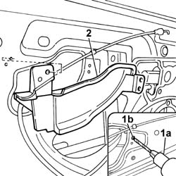

7005E91 One front door ANTI-BREAK IN PARTITION, left or right - R.R. with door panel removed
- Path
- Procedures > 70 FITTINGS > 7005 PASSENGER COMPARTMENT FRONT SIDE DOORS > 7005E front side door trim > 7005E91 One front door ANTI-BREAK IN PARTITION, left or right - R.R. with door panel removed
- Kind
- repair procedure (removal / refitting; the operation number is the code)
- Applies to
- all engines; all production periods
- Interactive page
- https://sloeber94.github.io/elrnDB-fPnd/en/#/2753066
Applies to: all engines; all production periods
 Removing
Removing
 Refitting
RefittingDisconnect the battery negative terminal.
5570T91 Front SIDE LOUDSPEAKER. (one), left or right - R.R. with door panel removed
7005A04 front side door water guard protection - r r or replace with door panel removed
1. Using a drill fitted with a suitable bit (1a), remove the rivets (1b).
2. Remove the anti-intrusion panel.

Applies to: all engines; all production periods
Refitting
RemovingFit the anti-intrusion panel and secure it using new rivets of suitable dimensions.
7005A04 front side door water guard protection - r r or replace with door panel removed
5570T91 Front SIDE LOUDSPEAKER. (one), left or right - R.R. with door panel removed
Connect the battery negative terminal.
Topics linked from this page (2)
- 5570T91 Front SIDE LOUDSPEAKER. (one), left or right - R.R. with door panel removed
- 7005A04 front side door water guard protection - r r or replace with door panel removed
Topics that link to this page (9)
- 5505B10 front door wiring - r r
- 7005C10 front door outer handle - r r with door panel removed
- 7005C11 front side door outside handle r r
- 7005C15 front side door lock barrel (in handle) - r+r
- 7005C42 front side door barrel/lock connecting linkage - r r with door panel removed
- 7005C43 link connecting front side door barrels/catch - r+r
- 7005N20 front side door lock motor/catch assembly - rr with door panel and support frame removed
- 7005N21 front side door lock motor-lock assembley-r r
- 7205E36 Stripping FRONT SIDE DOOR